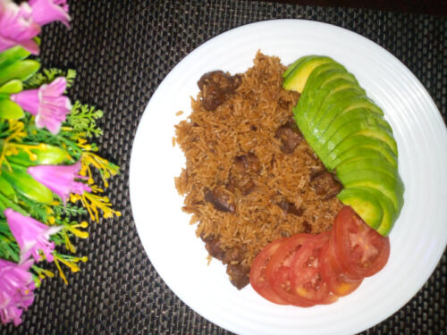

Kenyan Pilau

Description
I will be honest, I have a hard time choosing favorite dishes mainly because I love the taste of different food and textures of worldly cuisines that makes it all so difficult to just pick one dish I could eat over and over again….For me Pilau comes close to being that one dish….
I once ate pilau for an entire week 😉 gives a whole new meaning to the phrase “how deep is your love? how far does it go?”…and so it goes without saying, that I go out of my way to make it right?
INGREDIENTS
- 2 cups rice (soaked for 20min, rinsed and drained)
- 2 large onions
- 1/4-1/2 cup of vegetable oil
- 1 heaped tsp ginger
- 1 heaped tsp garlic
- 1 large sweet potato approx 300g
- 1 tbsp tomato paste
- 1 tbsp pilau masala powder
- 2 dry/fresh chillies (red/green)
- Salt to taste
- Boiled beef
- 4 cups liquid(water+broth from meat)
FOR BEEF
- 500-800g beef on bone (cut into large chunks about 2 inches thick)
- 1 tsp cumin seeds
- 1 tsp Salt
- 1 tsp fresh ginger(grated)
- 1 tsp fresh garlic (grated) or finely chopped
- 3 cups water
STEPS
- Start with the beef. In a pot add all the ingredients for the meat and simmer on low heat for about 1-2 hours or until the meat is tender soft and is just about falling off the bone.
- Heat oil in large sauce pan, add onions and fry until they start to turn slightly brown
- Next, add all your dry whole spices, the ginger, garlic stir and fry on medium-high heat until the mixture is aromatic and turns completely brown (Be very careful not to burn the onion mix) ensure you keep stirring and regulate your heat if you feel it is too high.
- Throw in the sweet potatoes, little water about 1/4 a cup just to steam the potatoes and give them a head start. cover and simmer for a few minutes 3-5.
- Then add the tomato paste, pilau masala powder , boiled beef, stir well and cook for a minute or two
- Add the rice and stir gently ensuring you do not break the rice, ensure each grain of rice is well coated with the spices and oil
- Pour in the liquid which should be a total of 4 cups inclusive of the beef broth and water
- Bring to boil check seasoning, add salt at this stage if need be.
- Cover and simmer on low heat for 20min or until rice is fully cooked
- Put of heat and let pilau seat for at least 5 minutes before serving
- Serve with kachumbari and avocado or as you prefer